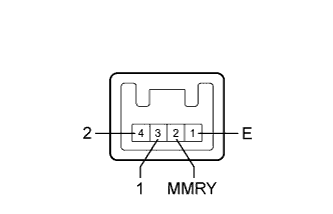

FRONT POWER SEAT CONTROL SYSTEM > Power Seat Position is not Memorized |
| 1.CHECK FRONT POWER SEAT CONTROL FUNCTION |
Check that each function of the power seat operates normally by using the front power seat switches.
|
| ||||
| OK | |
| 2.READ VALUE USING INTELLIGENT TESTER (SEAT POSITION MEMORY) |
Use the seat memory switch to record the seat position (Click here).
Using the intelligent tester, read the Data List (Click here).
| Tester Display | Measurement Item/Range | Normal Condition | Diagnostic Note |
| Seat Memory No1 | Seat position memorized with M1 switch / Mem or Not Mem | Mem: Memorized Not Mem: Not memorized | - |
| Seat Memory No2 | Seat position memorized with M2 switch / Mem or Not Mem | Mem: Memorized Not Mem: Not memorized | - |
|
| ||||
| OK | ||
| ||
| 3.READ VALUE USING INTELLIGENT TESTER (SEAT MEMORY SWITCH) |
Using the intelligent tester, read the Data List (Click here).
| Tester Display | Measurement Item/Range | Normal Condition | Diagnostic Note |
| Seat Memory Switch 1 | Seat memory switch M1 signal / ON or OFF | ON: M1 switch on OFF: M1 switch off | - |
| Seat Memory Switch 2 | Seat memory switch M2 signal / ON or OFF | ON: M2 switch on OFF: M2 switch off | - |
| Seat Memory Set Switch | Seat memory switch SET signal / ON or OFF | ON: SET switch on OFF: SET switch off | - |
|
| ||||
| OK | |
| 4.CHECK FRONT POWER SEAT SWITCH LH (OPERATION) |
Replace the front power seat switch with a new one or normally operating one (Click here).
Use the seat memory switch to record the seat position (Click here).
Refer to the Data List for the driver seat and check that the memory operation is completed normally.
|
| ||||
| OK | ||
| ||
| 5.INSPECT SEAT MEMORY SWITCH |
|  |
Remove the seat memory switch (Click here).
Measure the resistance according to the value(s) in the table below.
| Tester Connection | Switch Condition | Specified Condition |
| 3 (1) - 1 (E) | Seat memory switch M1 pressed | Below 1 Ω |
| 4 (2) - 1 (E) | Seat memory switch M2 pressed | Below 1 Ω |
| 2 (MMRY) - 1 (E) | Seat memory switch SET pressed | Below 1 Ω |
|
| ||||
| OK | |
| 6.CHECK HARNESS AND CONNECTOR (OUTER MIRROR CONTROL ECU - SEAT MEMORY SWITCH) |
Disconnect the K8 ECU connector.
Disconnect the k2 switch connector.
Measure the resistance according to the value(s) in the table below.
| Tester Connection | Condition | Specified Condition |
| K8-2 (M1) - k2-3 (1) | Always | Below 1 Ω |
| K8-3 (M2) - k2-4 (2) | Always | Below 1 Ω |
| K8-1 (MM) - k2-2 (MMRY) | Always | Below 1 Ω |
| K8-13 (MSWE) - k2-1 (E) | Always | Below 1 Ω |
| K8-2 (M1) - Body ground | Always | 10 kΩ or higher |
| K8-3 (M2) - Body ground | Always | 10 kΩ or higher |
| K8-1 (MM) - Body ground | Always | 10 kΩ or higher |
| K8-13 (MSWE) - Body ground | Always | 10 kΩ or higher |
|
| ||||
| OK | ||
| ||
| 7.CHECK MAIN BODY ECU (OPERATION) |
Replace the main body ECU with a new one or normally operating one (Click here).
Use the seat memory switch to record the seat position (Click here).
Refer to the Data List for the driver seat and check that the memory operation is completed normally.
|
| ||||
| OK | ||
| ||